Breakthroughs in Flat Bands and Interactions#
Flat bands from lattice geometry and from a moiré twist, the Hubbard model
and magnetic order in mean field, and superconductivity from the BCS gap
equation to Kitaev’s Majorana chain and the nanowires that realize it. It traces the ideas behind
tbkit.lattices, tbkit.moire, tbkit.meanfield and
tbkit.bdg.
1957 – BCS Theory and the Self-Consistent Gap Equation#
J. Bardeen, L. N. Cooper and J. R. Schrieffer explained superconductivity by a condensate of Cooper pairs, whose gap solves a self-consistent gap equation, \(1 = \frac{V}{N}\sum_{\mathbf{k}}\tanh(E_{\mathbf{k}}/2T)/2E_{\mathbf{k}}\). At weak coupling its solution is universal: \(\Delta(T)\) vanishes as \(\sqrt{1-T/T_c}\) at \(T_c\), with \(\Delta(0) = 1.764\,k_BT_c\) for every material. In real space (de Gennes, 1966, below) it becomes the self-consistency of the gap site by site, \(\Delta_i = V\langle c_{i\downarrow}c_{i\uparrow}\rangle\).
Implementation: tbkit.bdg.s_wave_gap() (real-space s-wave gap
equation, uniform or site-dependent attraction, any temperature).
References: J. Bardeen, L. N. Cooper, and J. R. Schrieffer, “Theory of Superconductivity,” Phys. Rev. 108, 1175-1204 (1957).
Example: examples/superconductivity/plot_bcs_gap_equation.py
confirms, on a clean \(12\times12\) torus, a uniform real-space gap
equal to the k-space BCS solution at every temperature, a \(T_c\)
(from the linear vanishing of \(\Delta^2\)) within 1% of the
linearized gap equation, \(\Delta(0)/T_c = 1.764\) to 2%, and the
proximity effect of a half-superconducting chain.
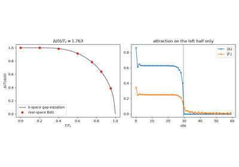
The BCS Gap Equation: Delta(T) and the Universal Ratio Delta(0)/T_c = 1.764
1963 – The Hubbard Model#
J. Hubbard – with M. Gutzwiller and J. Kanamori, the same year – reduced interacting electrons in narrow bands to their bare bones: hopping between neighbouring sites, and a repulsion \(U\) between two electrons on the same site,
It is the reference model of itinerant magnetism and of the Mott insulator, and, doped, a candidate model of high-temperature superconductivity. Its simplest approximation lets each spin move in the mean density of the other (unrestricted Hartree-Fock). On graphene flakes it predicts magnetic zigzag edges, each edge ferromagnetic and neighbouring edges opposite (Fujita et al. 1996; Son, Cohen and Louie 2006).
Implementation: tbkit.meanfield.hubbard_mean_field(), the
self-consistent collinear mean field of any System Hamiltonian, at zero
or finite temperature.
References: J. Hubbard, “Electron Correlations in Narrow Energy Bands,” Proc. R. Soc. Lond. A 276, 238-257 (1963); M. C. Gutzwiller, Phys. Rev. Lett. 10, 159 (1963); J. Kanamori, Prog. Theor. Phys. 30, 275 (1963); M. Fujita, K. Wakabayashi, K. Nakada, and K. Kusakabe, J. Phys. Soc. Jpn. 65, 1920 (1996).
Example: examples/correlations/plot_hubbard_edge_magnetism.py
confirms that a 216-site zigzag hexagon at \(U = 2|t|\) has every
outer edge atom magnetized, up on one sublattice and down on the other,
with a total \(S_z = 0\); and that a finite flake needs \(U\) above
a threshold that shrinks as its edges get longer.
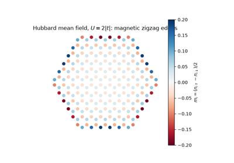
The Hubbard Model: Magnetism of Graphene’s Zigzag Edges
1966 – The Bogoliubov-de Gennes Equations#
N. N. Bogoliubov (1958) diagonalized the BCS Hamiltonian with quasiparticles that are part electron, part hole. P.-G. de Gennes (1966) wrote the same mean field site by site: a quasiparticle is a two-component wave function \((u_i, v_i)\) solving
with a spectrum symmetric about zero (particle-hole symmetry) and a pairing potential \(\Delta_i\) free to vary in space. On a clean lattice it gives back \(E_{\mathbf{k}} = \pm\sqrt{\xi_{\mathbf{k}}^2 + |\Delta|^2}\); its reach is everything else – vortices, interfaces, disorder, the proximity effect, and junctions. In a normal region between two superconductors an electron is Andreev-reflected as a hole at each interface (A. F. Andreev, 1964), and the round trips quantize into Andreev bound states inside the gap (de Gennes and Saint-James, 1963); with no normal region and a phase difference \(\varphi\), one bound state sits at \(\Delta|\cos(\varphi/2)|\) (Kulik and Omelyanchuk, 1977) and carries the Josephson current. The same equations, with self-consistency, give the real-space gap equation of the BCS entry above, and, with p-wave pairing, the Majorana modes below.
Implementation: tbkit.bdg.bdg_ham() (real-space BdG matrix of any
Hamiltonian and pairing), pairing_s_wave() and
pairing_bonds(), particle_hole() (the
symmetry \(\tau_x\mathcal{K}\)), and bdg_kspace() for
the Bloch form.
References: N. N. Bogoliubov, “On a new method in the theory of superconductivity,” Nuovo Cimento 7, 794-805 (1958); P.-G. de Gennes, Superconductivity of Metals and Alloys (Benjamin, 1966); P.-G. de Gennes and D. Saint-James, “Elementary excitations in the vicinity of a normal metal-superconducting metal contact,” Phys. Lett. 4, 151-152 (1963); A. F. Andreev, Sov. Phys. JETP 19, 1228-1231 (1964); I. O. Kulik and A. N. Omel’yanchuk, Sov. J. Low Temp. Phys. 3, 459 (1977).
Example: examples/superconductivity/plot_bogoliubov_de_gennes_equations.py
confirms the BCS spectrum \(\pm\sqrt{\xi_k^2+\Delta^2}\) and the
particle-hole symmetry of an s-wave ring, an Andreev level within 2% of
\(\Delta|\cos(\varphi/2)|\) at a phase jump between two 200-site
superconductors, and subgap de Gennes-Saint-James states that multiply,
and sink towards zero energy, as a normal region grows from 0 to 200
sites.
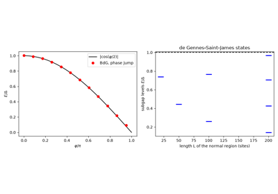
The Bogoliubov-de Gennes Equations: Andreev Bound States
1966/1991-1992 – Nagaoka and Mielke-Tasaki Flat-Band Ferromagnetism#
Can the Hubbard repulsion alone make a ferromagnet? Aligned spins never share a site, but aligning them costs kinetic energy, and mean-field (Stoner) arguments are unreliable. Y. Nagaoka (1966) gave the first rigorous case: at \(U = \infty\), with exactly one electron fewer than sites, the ground state is the saturated ferromagnet, which lets the hole move most freely. A. Mielke (1991-1992) found a second one at finite \(U\): on line graphs such as the kagome lattice the lowest band is exactly flat, and filled with electrons of one spin it costs no kinetic energy over any other filling and no interaction energy at all – a ferromagnetic ground state for every \(U > 0\), unique when the band is exactly filled. H. Tasaki (1992) built a family of decorated lattices with the same property, and later (1995) proved that the ferromagnet survives when the flat band is bent into a nearly flat one, provided \(U\) is large compared with its width. Flat bands have been the main route to itinerant ferromagnetism in lattice models since, and Lieb’s ferrimagnet (1989, below) is their bipartite cousin.
Implementation: tbkit.lattices.kagome() on a torus
(System with periodic=True) and
tbkit.meanfield.hubbard_mean_field(), started from a saturated or a
paramagnetic density.
References: Y. Nagaoka, “Ferromagnetism in a Narrow, Almost Half-Filled s Band,” Phys. Rev. 147, 392-405 (1966); A. Mielke, “Ferromagnetic ground states for the Hubbard model on line graphs,” J. Phys. A 24, L73-L77 (1991); A. Mielke, “Exact ground states for the Hubbard model on the Kagome lattice,” J. Phys. A 25, 4335-4345 (1992); H. Tasaki, “Ferromagnetism in the Hubbard models with degenerate single-electron ground states,” Phys. Rev. Lett. 69, 1608-1611 (1992); H. Tasaki, “Ferromagnetism in Hubbard Models,” Phys. Rev. Lett. 75, 4678-4681 (1995).
Example: examples/correlations/plot_flat_band_ferromagnetism.py
confirms, by exact diagonalization of square clusters with one hole,
the saturated ferromagnet above \(U_c = 18.58|t|\) (4 sites) and
\(51.8|t|\) (6 sites) and at \(U = 1000|t|\) on 9 sites; on a
48-site kagome torus, a mean-field ground state of spin 17/2 and energy
\(-2t\) per electron for every \(U\) down to \(0.01t\); and,
with a second-neighbour hopping, a threshold proportional to the width
of the band, \(U_c \approx 3.46\,W\).
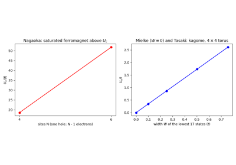
Flat-Band Ferromagnetism: Nagaoka, Mielke and Tasaki
1973/1988 – Frustration and the 120-Degree Order of the Triangular Antiferromagnet#
On a triangle, three antiparallel spins cannot all be satisfied. G. Wannier (1950) showed that the Ising triangular antiferromagnet never orders; P. W. Anderson (1973) proposed that the quantum Heisenberg one is a resonating-valence-bond spin liquid; D. A. Huse and V. Elser (1988), and later numerical work, found that it orders after all, non-collinearly: the moments of the three sublattices point 120 degrees apart, with zero total moment. Frustration has remained the main route to spin liquids, and the half-filled triangular Hubbard model its simplest itinerant version.
Implementation: tbkit.meanfield.hubbard_mean_field_noncollinear()
(spin-rotation invariant Hartree-Fock: the whole onsite spin density
matrix, moments in any direction, spin-orbit Hamiltonians accepted; with
moments along \(z\) it reduces to
hubbard_mean_field()).
References: G. H. Wannier, Phys. Rev. 79, 357 (1950); P. W. Anderson, “Resonating valence bonds: A new kind of insulator?,” Mater. Res. Bull. 8, 153-160 (1973); D. A. Huse and V. Elser, Phys. Rev. Lett. 60, 2531 (1988); H. R. Krishnamurthy, C. Jayaprakash, S. Sarker, and W. Wenzel, Phys. Rev. Lett. 64, 950 (1990).
Example: examples/correlations/plot_noncollinear_120_degree_order.py
confirms the 120-degree state from random starts (neighbouring moments at
\(\cos = -1/2\), zero total moment, coplanar), below the collinear
up-up-down state, and the Heisenberg limit \(-1.5\,t^2/U\) (versus
\(-\frac43t^2/U\)) per bond at \(U = 40t\).
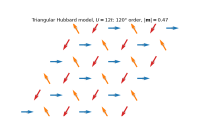
Frustrated Magnetism: the 120-Degree Order of the Triangular Hubbard Model
1989 – Lieb’s Theorem and Flat-Band Lattices#
E. Lieb proved one of the few rigorous, non-perturbative results about the many-body Hubbard problem: on a bipartite lattice with unequal numbers of sites on its two sublattices \(A\) and \(B\), the half-filled ground state has total spin exactly \(S = \bigl||A|-|B|\bigr|/2\), for any repulsion \(U>0\) – ferrimagnetic order, with a net moment, derived without approximation. The lattice Lieb used to prove it – a square lattice with an extra site at the midpoint of every bond, so three sites per unit cell split two-to-one between the sublattices – turns out to have an exactly flat (dispersionless) single-particle band already at the noninteracting level, from destructive interference confining an eigenstate to a single 4-site plaquette with zero amplitude everywhere else; the kagome lattice shares the same flat-band mechanism on a different geometry. A flat band’s macroscopic, noninteracting degeneracy is exactly the extreme limit in which arbitrarily weak interactions dominate – the underlying reason flat-band lattices remain an active route to engineered strong correlation and (on kagome, with further ingredients) topological flat-band physics.
Both lattices owe their flat band to the same thing – a unit cell with more sites than the number of independent ways an electron can leave it:
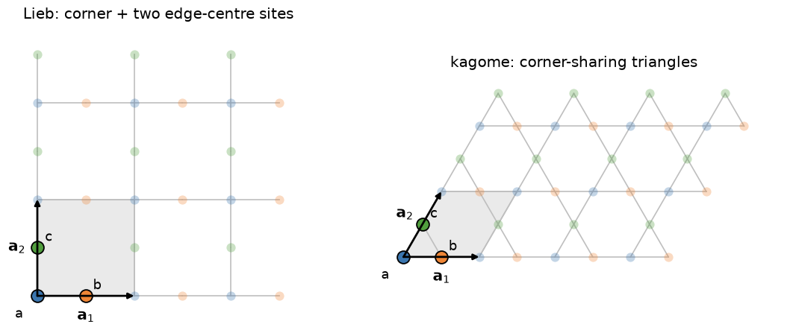
Implementation: tbkit.lattices.lieb() and tbkit.lattices.kagome()
provide both lattices’ unit cells directly, ready for
KSpace; tbkit.meanfield.hubbard_mean_field()
solves the Hubbard model in mean field, whose lowest-energy solution
obeys Lieb’s spin count.
Example: examples/correlations/plot_lieb_theorem.py confirms that
the flat band of the Lieb lattice lives on the \(B\) sites, and the
ferrimagnetic ground state, \(S = ||A|-|B||/2\) with opposite moments
on the two sublattices, on tori and open flakes of two sizes at two
values of \(U\).
References: E. H. Lieb, “Two Theorems on the Hubbard Model,” Phys. Rev. Lett. 62, 1201-1204 (1989).
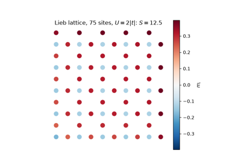
Lieb’s Theorem: The Ferrimagnet of the Lieb Lattice
2000/2011 – A Topological Flat Band on the Kagome Lattice#
K. Ohgushi, S. Murakami, and N. Nagaosa showed in 2000 that a canted (non-coplanar) magnetic texture on the kagome lattice, via the scalar spin chirality its itinerant electrons pick up hopping around each elementary triangle, acts on those electrons exactly like a complex nearest-neighbor hopping amplitude \(te^{i\phi}\) – breaking time-reversal symmetry with no net magnetic field, the kagome counterpart of Haldane’s honeycomb construction above. That complex phase gaps the flat band’s symmetry-protected touching point with the lattice’s middle band (above), leaving the (no longer exactly flat) lower band a genuine Chern insulator. Eleven years later, three independent 2011 papers (Tang, Mei, and Wen; Sun, Gu, Katsura, and Das Sarma; Neupert, Santos, Chamon, and Mudry) generalized the same idea into a broader research program: engineer lattice models whose lowest band is simultaneously nearly flat and topologically nontrivial, as a route to fractional-quantum-Hall-like physics – a fractional Chern insulator – entirely without Landau levels or a net magnetic field.
Implementation: tbkit.lattices.kagome() with every nearest-neighbor
hopping set to the same complex amplitude \(te^{i\phi}\) (rather
than the real, uniform \(t\) used above) via
tbkit.kspace.KSpace.set_hopping(); chern_number()
and berry_curvature() (1982 above) diagnose the
resulting band’s topology exactly as for the Haldane model.
References: K. Ohgushi, S. Murakami, and N. Nagaosa, “Spin Anisotropy and Quantum Hall Effect in the Kagome Lattice: Chiral Spin State Based on a Ferromagnet,” Phys. Rev. B 62, R6065-R6068 (2000); E. Tang, J.-W. Mei, and X.-G. Wen, “High-Temperature Fractional Quantum Hall States,” Phys. Rev. Lett. 106, 236802 (2011); K. Sun, Z. Gu, H. Katsura, and S. Das Sarma, “Nearly Flatbands with Nontrivial Topology,” Phys. Rev. Lett. 106, 236803 (2011); T. Neupert, L. Santos, C. Chamon, and C. Mudry, “Fractional Quantum Hall States at Zero Magnetic Field,” Phys. Rev. Lett. 106, 236804 (2011).
Example: examples/topology/plot_kagome_chern_band.py confirms the
flat band and middle band are exactly degenerate at \(\Gamma\) when
\(\phi=0\), confirms a real gap (larger than 0.3t) opens across the
whole Brillouin zone once \(\phi\ne0\), and confirms the resulting
three bands’ Chern numbers are exactly \(-1, 0, +1\) – summing to
zero, as they must.
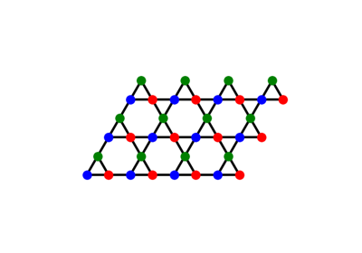
A Topological Flat Band on the Kagome Lattice
2001 – The Kitaev Chain and Majorana Zero Modes#
A. Kitaev wrote down the simplest topological superconductor: spinless fermions on a chain, with nearest-neighbour hopping and p-wave pairing. In the Bogoliubov-de Gennes description its spectrum is \(\pm\sqrt{(2t\cos k - \mu)^2 + 4|\Delta|^2\sin^2k}\); for \(|\mu| < 2|t|\) it is topological, and an open chain binds a Majorana zero mode at each end – half a fermion, pinned at zero energy by particle-hole symmetry. Its realization in nanowires is the 2010 entry below.
Kitaev’s bulk invariant is the Majorana number \(\mathcal{M} = \mathrm{sign}[\mathrm{Pf}A(0)\,\mathrm{Pf}A(\pi)]\), from the Pfaffians of the Hamiltonian written in Majorana operators at the two time-reversal-invariant momenta: \(-1\) when the chain is topological.
Implementation: tbkit.bdg – the real-space BdG Hamiltonian
(bdg_ham(), with bond or s-wave pairings), and the BdG
Bloch Hamiltonian (bdg_kspace()), whose Berry phase,
open chains and symmetry class follow from the usual KSpace tools;
majorana_number() (with pfaffian()) gives
the Majorana number, and the parity of the Chern number in 2D.
References: A. Y. Kitaev, “Unpaired Majorana Fermions in Quantum Wires,” Physics-Uspekhi 44, 131-136 (2001).
Example: examples/superconductivity/plot_kitaev_chain.py confirms
the bulk spectrum, the Berry phase \(\pi\) and the Majorana number
\(-1\) for \(|\mu| < 2|t|\) (0 and \(+1\) outside), and two zero modes (\(|E| \sim 10^{-12}\)) at the ends of
an open 40-site chain in the topological phase only.
2007 – Magnetism of Triangular Graphene Nanoislands#
J. Fernández-Rossier and J. J. Palacios asked which graphene flakes are magnets, and found the answer in their shape. A triangle with zigzag edges has all three edges on the same sublattice, \(A\), and \(N_Z = |A| - |B|\) more \(A\) than \(B\) sites; the nearest-neighbour Hamiltonian then has \(N_Z\) states at exactly zero energy, all on \(A\) and concentrated on the edges. At half filling they hold \(N_Z\) electrons, which – like the open shell of an atom – align (Hund’s rule): the flake carries a spin \(S = N_Z/2\) growing with its size, for any repulsion \(U\), whereas a hexagonal flake (no zero modes) needs \(U\) above a threshold. It is Lieb’s theorem (1989) made concrete in a molecule, and the first proposal of nanographene magnets. Triangulene, the smallest such flake with \(S = 1\), was synthesized on a surface in 2017, and its larger siblings were seen to be magnetic soon after.
Implementation: tbkit.graphene.GrapheneLattice.triangle_zigzag()
and hexagon_zigzag() cut the
flakes; tbkit.meanfield.hubbard_mean_field() solves the Hubbard
model.
References: J. Fernández-Rossier and J. J. Palacios, “Magnetism in Graphene Nanoislands,” Phys. Rev. Lett. 99, 177204 (2007); M. Ezawa, “Metallic graphene nanodisks: Electronic and magnetic properties,” Phys. Rev. B 76, 245415 (2007); N. Pavliček et al., “Synthesis and characterization of triangulene,” Nat. Nanotechnol. 12, 308-311 (2017).
Example: examples/correlations/plot_triangular_graphene_nanoislands.py
confirms \(N_Z = |A|-|B|\) zero modes, all on \(A\), and a spin
\(S = N_Z/2\) at \(U = 0.1|t|\) and \(2|t|\) for triangles of
9 to 81 sites; a moment equal, at \(U = 0.05|t|\), to half the
zero-mode density (within 0.005); and a 96-site hexagon with no moment at
\(U = 0.1|t|\).
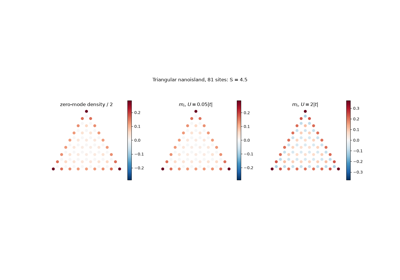
Magnetism of Triangular Graphene Nanoislands
2010 – Majorana Nanowires#
Kitaev’s chain needs spinless fermions with p-wave pairing, which no material offers. R. M. Lutchyn, J. D. Sau and S. Das Sarma, and independently Y. Oreg, G. Refael and F. von Oppen, built one from ordinary parts: a semiconductor nanowire with strong Rashba spin-orbit coupling, a Zeeman field \(V_Z\) perpendicular to the spin-orbit field, and s-wave pairing \(\Delta\) induced by a nearby superconductor. The field leaves a single spin-orbit band at the Fermi level, whose inherited pairing is effectively p-wave, and the wire is topological once
\(\mu_0\) the chemical potential from the band bottom: a Majorana zero mode is then bound to each end. The zero-bias conductance peaks reported in InSb wires (Mourik et al., 2012) launched an experimental search for topological qubits that is still debated – disorder and smooth confinement can mimic the signature.
Implementation: tbkit.orbital.OrbitalSystem with
spin=True, set_rashba() and
set_zeeman(), made superconducting by
tbkit.bdg.bdg_ham() with pairing_s_wave(); the
periodic wire (a spinful KSpace through
bdg_kspace()) gives majorana_number().
References: R. M. Lutchyn, J. D. Sau, and S. Das Sarma, “Majorana Fermions and a Topological Phase Transition in Semiconductor-Superconductor Heterostructures,” Phys. Rev. Lett. 105, 077001 (2010); Y. Oreg, G. Refael, and F. von Oppen, “Helical Liquids and Majorana Bound States in Quantum Wires,” Phys. Rev. Lett. 105, 177002 (2010); V. Mourik et al., “Signatures of Majorana Fermions in Hybrid Superconductor-Semiconductor Nanowire Devices,” Science 336, 1003-1007 (2012).
Example: examples/superconductivity/plot_majorana_nanowire.py
confirms that the real-space and Bloch wires agree, a Majorana number of
\(-1\) exactly inside \(V_Z^2 > \Delta^2 + \mu_0^2\) (a 31x31
grid in the phase diagram), and, with \(\mu\) at the band bottom, a gap that
closes at \(V_Z = \Delta\) and two states at \(|E| < 10^{-10}\)
on the outer 20 sites of a 200-site wire beyond it.
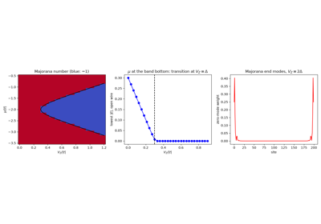
Majorana Nanowires: Rashba, Zeeman and s-Wave Pairing
2011/2018 – Magic-Angle Twisted Bilayer Graphene#
R. Bistritzer and A. H. MacDonald showed that two graphene layers twisted by a small angle \(\theta\) form a moiré superlattice whose interlayer tunnelling \(w\) renormalizes the Dirac velocity, \(v^*/v = (1-3\alpha^2)/(1+6\alpha^2)\) with \(\alpha = w/\hbar vk_\theta\), and flattens the two bands at charge neutrality at a series of magic angles, the first near \(1.1°\). In 2018 Y. Cao, P. Jarillo-Herrero and co-workers found, in exactly those bands, correlated insulating states and superconductivity – the start of “twistronics” and of moiré materials as tunable platforms for strong correlations.
Implementation: tbkit.moire.twisted_bilayer() (commensurate moiré
cells of honeycomb or square layers, every hopping a function of the bond
vector, tbkit.moire.pz_hopping() by default),
tbkit.moire.commensurate_angle(), and
tbkit.moire.magic_angle_parameter() (\(w\), \(\alpha\),
\(v^*/v\) of the same model).
References: R. Bistritzer and A. H. MacDonald, “Moire bands in twisted double-layer graphene,” PNAS 108, 12233-12237 (2011); J. M. B. Lopes dos Santos, N. M. R. Peres, and A. H. Castro Neto, Phys. Rev. B 86, 155449 (2012); P. Moon and M. Koshino, Phys. Rev. B 85, 195458 (2012); Y. Cao et al., Nature 556, 43-50 and 80-84 (2018).
Example: examples/moire/plot_magic_angle_twisted_bilayer.py
confirms \(w \approx 110\) meV and a first magic angle near
\(1.1°\) for the Moon-Koshino hoppings, a tight-binding Dirac velocity
within 3% of Bistritzer-MacDonald at 9.4°, 6.0° and 4.4°, and – at the
magic value of \(\alpha\), reached at 6.0° by scaling the interlayer
hoppings, since the 1.05° cell (11908 orbitals) is too large for dense
Bloch matrices – central bands more than 15 times narrower.
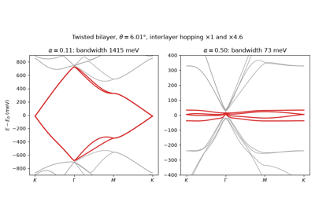
Magic-Angle Twisted Bilayer Graphene: Flat Moiré Bands